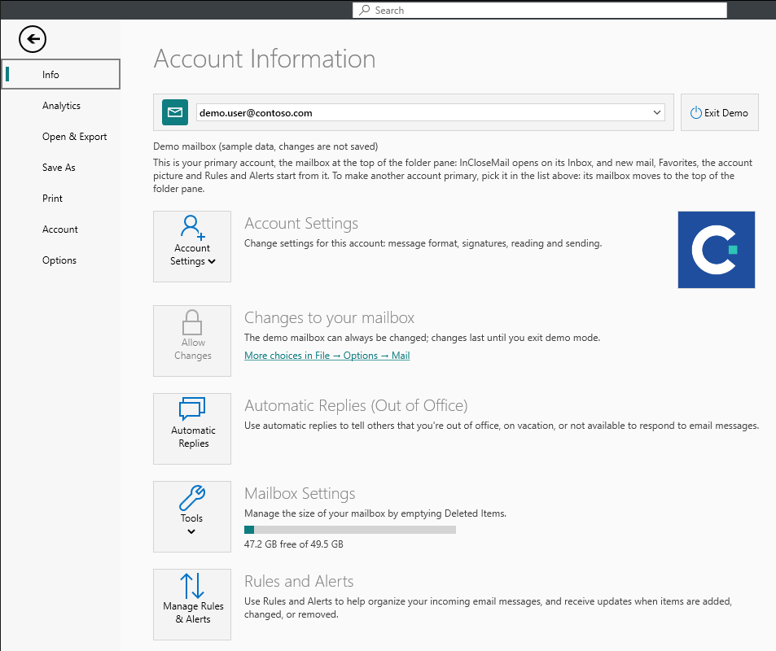
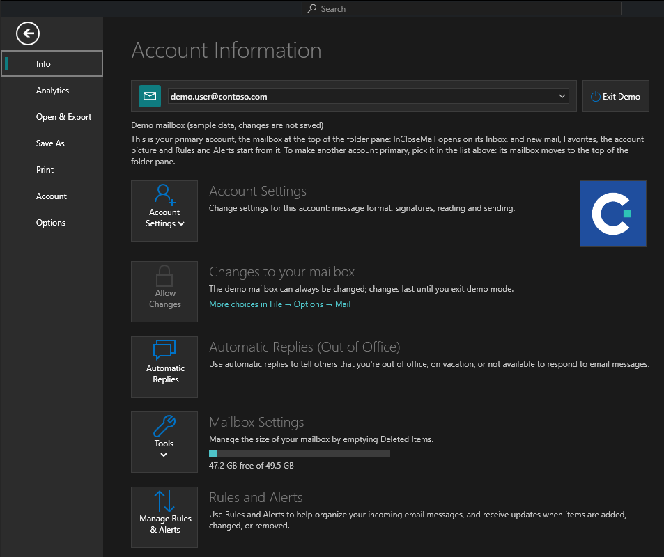

- Demo Mode: a full sample mailbox, calendar and contacts to look around in or show someone, with no account, or from Help → Demo Mode while you’re signed in. Every picture on these pages was taken in it.
- A mailbox that keeps working when Microsoft 365 doesn’t: changes and sent mail wait on your PC through an outage, and File → Options → Advanced checks whether your mailbox answers another way (IMAP and SMTP).
- Lock InCloseMail: Windows Hello or an authenticator code before your mail opens, when Windows locks or after a while away, with the copy of your mail on your PC encrypted too. See Lock InCloseMail.
- Permissions in plain words: File → Info → Permissions shows everything InCloseMail is allowed to do in your account.




Missing something you used in Outlook? Choose Help → Suggest a Feature in the app. Found a bug? Help → Report a Bug sends a bug report to bugs@inclosemail.com.